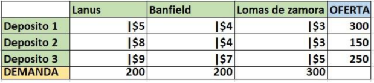
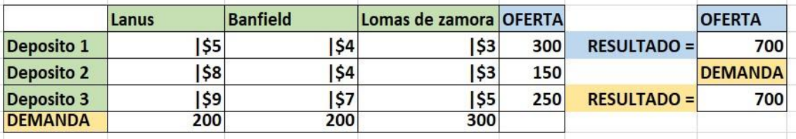
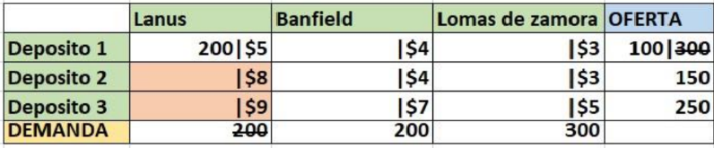
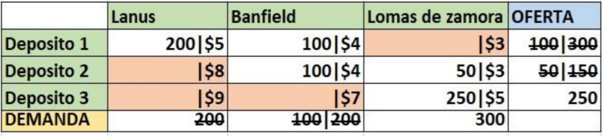
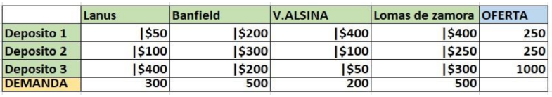
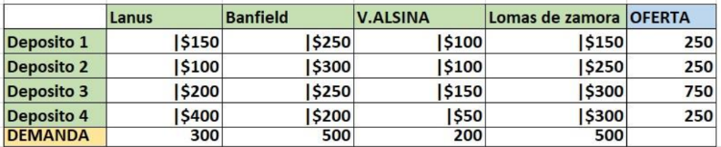
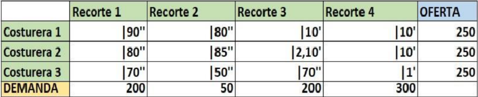

Esquina Noroeste.
El método de la esquina Noroeste es una técnica que se usa para resolver problemas de transporte o distribución. Consiste en encontrar una solución inicial que cumpla con todas las condiciones del problema, pero no garantiza que se consiga el costo más bajo posible.
Para iniciar con este método, primero analizaremos una tabla de ejemplo. En ella se plantea un problema de transporte donde tres depósitos deben abastecer a tres locales en distintas zonas.

El primer paso consiste en sumar la demanda de cada local (Lanús, Banfield, Lomas de Zamora) y compararla con la oferta total de los tres depósitos. A continuación, se muestra una imagen como ejemplo.

Como se puede observar, la oferta y la demanda son iguales, lo que permite continuar con el método de la esquina noroeste para encontrar una solución.
El segundo paso es iniciar las asignaciones. En el método de la esquina Noroeste, comenzamos desde la esquina superior izquierda, asignando la mayor cantidad posible.
En este caso, la primera asignación es del depósito 1 al local Lanús. La cantidad máxima asignable es 200 unidades, ya que la demanda total de lanús es 200 y la oferta del depósito es 300. Luego de la asignación, Restamos este valor de la oferta, dejando un remanente de 100 undidades.
A continuación, se muestra una imagen que ilustra este ejemplo.

En la imagen se puede observar que las celdas correspondientes a los depósitos 2 y 3 para el local de Lanús están marcados en rojo. Esto se debe a que la demanda de Lanús ya ha sido satisfecha, aunque aún quedan 100 unidades disponibles en el depósito 1.
Siguiendo con las asignaciones, el siguiente destino a abastecer es Banfield. Como aun disponemos de 100 unidades en el depósito 1, las enviamos allí. Sin embargo, esto no cubre toda la demanda de Banfield, por lo que utilizamos 100 unidades adicionales del depósito 2 completar su abastecimiento.
Ahora solo queda asignar las unidades restantes al local de Lomas de zamora. Para ello, enviamos 50 unidades desde el depósito 2 y 250 undidades desde el depósito 3. Con esto, logramos satisfacer por completo la demanda del local.
Una vez finalizadas todas las asignaciones, solo resta calculara el resultado de la solución inicial S.I.

Para obtener el resultado de la solución inicial, es necesario multiplicar las unidades asignadas en cada celda por su respectivo costo de envío. Por ejemplo, para Lanús, se multiplica 200 x 5.
Después de realizar todas las multiplicaciones correspondientes, sumamos los valores obtenidos para calcular el costo toal de la solución inicial.
A continuación, se muestra el cálculo detallado de esta solución.
(200 x 5) + (100 x 4) + (100 x 4) + (50 x 3) + (250 x 5) = 3200 S.I
El resultado de nuestra solución inicial es 3200. Esto significa que, al distribuir los productos utilizando el método de la Esquina Noroeste, el costo total es de $3200.
Sin embargo, es importante recordar que este es solo un punto de partida y no necesariamente la solución más eficiente.
Ejericicios: Resuelva las siguientes tablas con el método de transporte Esquina Noroeste.


El costo en la siguiente tabla se expresa en unidades de tiempo, donde los segundos se representan con '' y los minutos con '. A continuación, se presenta la tabla de tarea:

Para la elaboración de laa tabla de tareas, utilizamos los siguientes datos: La casa central de la empresa DIA% se encuentra ubicada en Juan Francisco Seguí 4646, CABA. Para esta tarea, se dispone de cinco vehículos con las siguientes características:
$50 por kilómetro y capacidad de 60 bultos.
$55 por kilómetro y capacidad de 65 bultos.
$65 por kilómetro y capacidad de 65 bultos.
$90 por kilómetro y capacidad de 90 bultos.
$95 por kilómetro y capacidad de 90 bultos.
Debemos satisfacer la demanda de 5 supermercados DIA% con las siguientes direcciones y demandas:
DIA% en báez 222, CABA. Demanda de 78 bultos.
DIA% en Avenida Santa Fe 4550, CABA. Demanda de 70 bultos.
DIA% en Avenida Raúl Scalabrini Ortiz 3170, CABA. Demanda de 70 bultos.
DIA% en Fitz Roy 2292, CABA. Demanda de 74 bultos.
DIA% en Beruti 3434, CABA. Demanda de 74 bultos
Una vez realizada la tabla de tareas, procederemos a obtener la solución inicial utilizando el método de esquina noroeste.